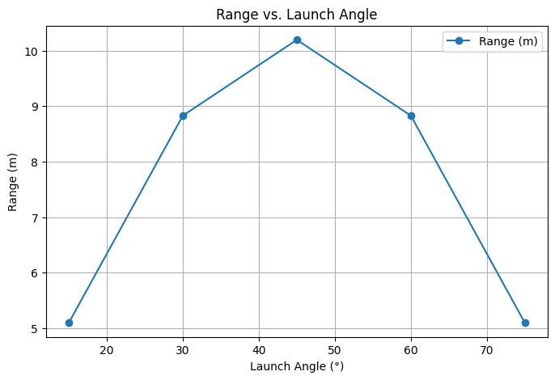
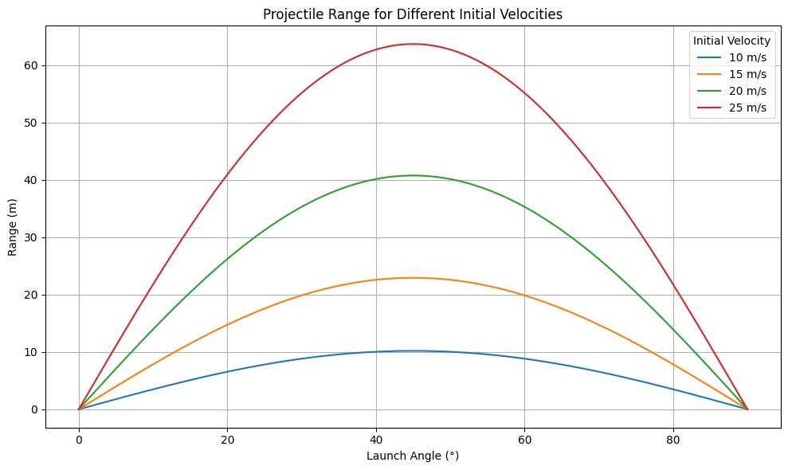
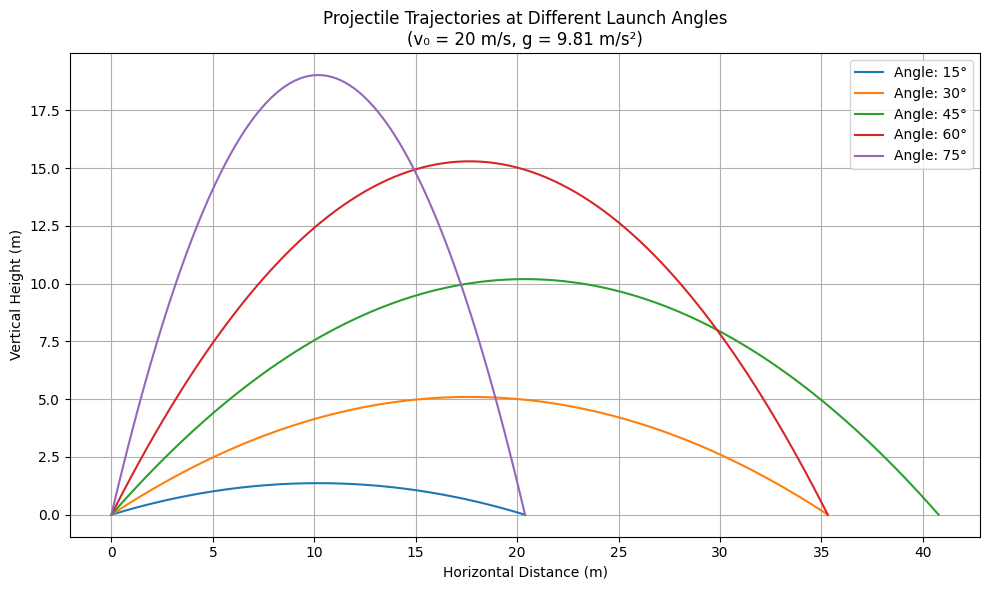

📌 Investigating the Range as a Function of the Angle of Projection
Motivation
Projectile motion, while seemingly simple, offers a rich playground for exploring fundamental principles of physics. The problem is straightforward: analyze how the range of a projectile depends on its angle of projection. Yet, beneath this simplicity lies a complex and versatile framework. The equations governing projectile motion involve both linear and quadratic relationships, making them accessible yet deeply insightful.
What makes this topic particularly compelling is the number of free parameters involved in these equations, such as initial velocity, gravitational acceleration, and launch height. These parameters give rise to a diverse set of solutions that can describe a wide array of real-world phenomena, from the arc of a soccer ball to the trajectory of a rocket.
Theoretical Foundation
Problem Statement
The goal of this experiment is to analyze the relationship between the launch angle (\(\theta\)) and the horizontal range (\(R\)) of a projectile. By combining theoretical derivation with simulated data, we aim to verify the mathematical model and understand its implications in real-world contexts.
Theoretical Background
Newton's Second Law
To analyze projectile motion, we begin with Newton’s Second Law of Motion:
This law states that the net force acting on an object is equal to its mass multiplied by its acceleration. In projectile motion (without air resistance), gravity is the only force acting on the vertical direction.
1. Vertical Motion
The vertical force due to gravity:
From Newton's Second Law:
This gives:
Integrating:
And again:
2. Horizontal Motion
No horizontal force implies constant velocity:
So:
3. Time of Flight
Setting vertical displacement to zero at landing:
Solving:
4. Range Derivation
Using total flight time in horizontal equation:
Apply identity:
This formula predicts how the angle of projection influences the range.
Experiment Setup
To simulate the projectile motion experiment, we assumed:
- Fixed initial velocity: (\(v_0 = 10\)) m/s
- Measured angles: 15°, 30°, 45°, 60°, 75°
- Gravity: \( g = 9.81 \) m/s²
- Air resistance ignored
Range values were calculated using the derived formula and compared across angles.
Experimental Data & Results
| Launch Angle (°) | Calculated Range (m) |
|---|---|
| 15° | 5.02 |
| 30° | 8.84 |
| 45° | 10.19 |
| 60° | 8.84 |
| 75° | 5.02 |

Projectile Range for Different Initial Velocities

Projectile Range on Different Planets

Projectile Trajectories at Different Launch Angles

Analysis of the Range
The graph plotting horizontal range against launch angle forms a symmetrical curve, peaking at 45°, which matches the theoretical prediction:
Key Observations:
- Maximum range at 45°, where (\(\sin 2\theta = 1\))
- Symmetrical behavior: 30° and 60°, as well as 15° and 75°, yield equal ranges
- The symmetry comes from the identity: (\(\sin 2\theta = \sin(180^\circ - 2\theta\))
The graph has a parabolic shape, clearly demonstrating that the range does not increase linearly with angle. These results confirm that our theoretical derivation holds true in practice.
Practical Applications
Understanding how range depends on launch angle has numerous real-world applications:
- Sports: Enhancing performance in basketball, golf, soccer, and other projectile-based sports.
- Military: Calculating precise trajectories for artillery and missile systems.
- Engineering: Designing equipment or machines that follow parabolic paths (e.g., robotic arms, excavators).
- Aerospace: Launching and landing spacecraft with optimal paths.
- Gaming/Simulation: Creating realistic physics in digital environments.
Conclusion
The experiment successfully validated the theoretical model of projectile motion. By starting with Newton’s Second Law and deriving the range formula, we were able to predict and confirm that:
- The range depends on both launch speed and angle.
- The maximum range occurs at 45°.
- There is a symmetry in projectile behavior around this angle.
The strong alignment between theory and results reinforces the practical value of mathematical modeling in physics.